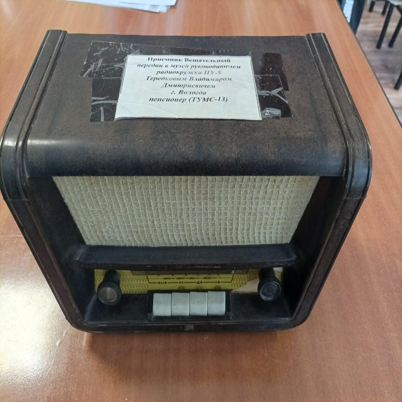
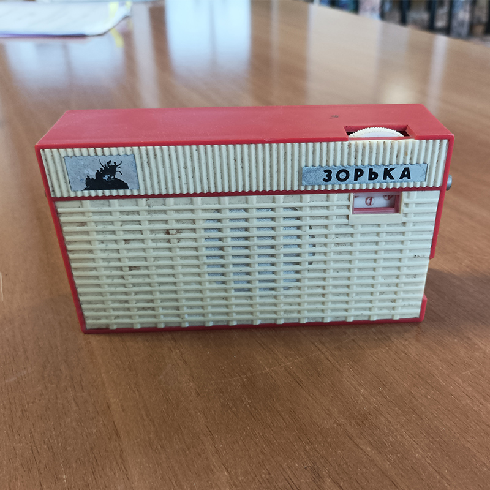
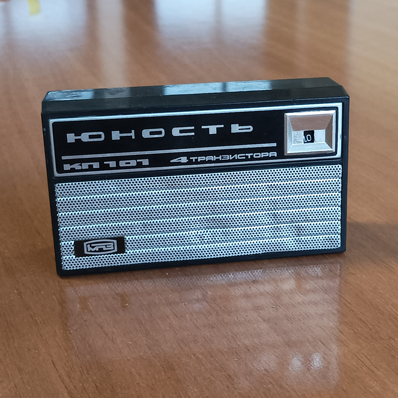
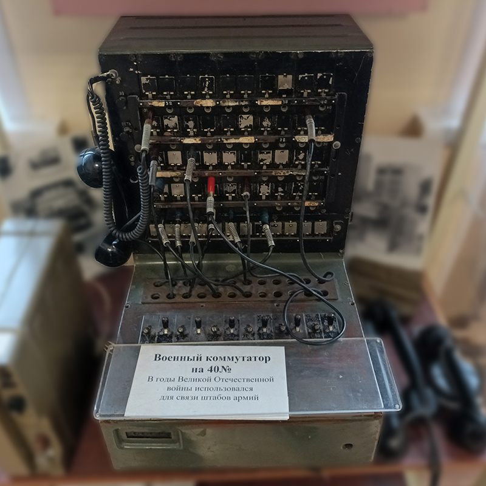
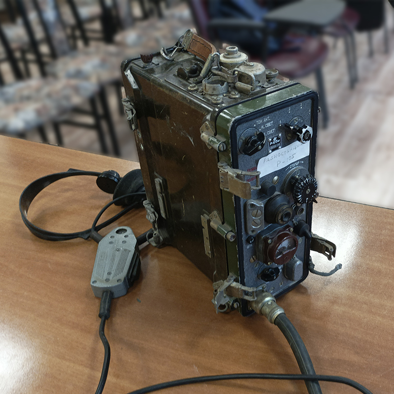
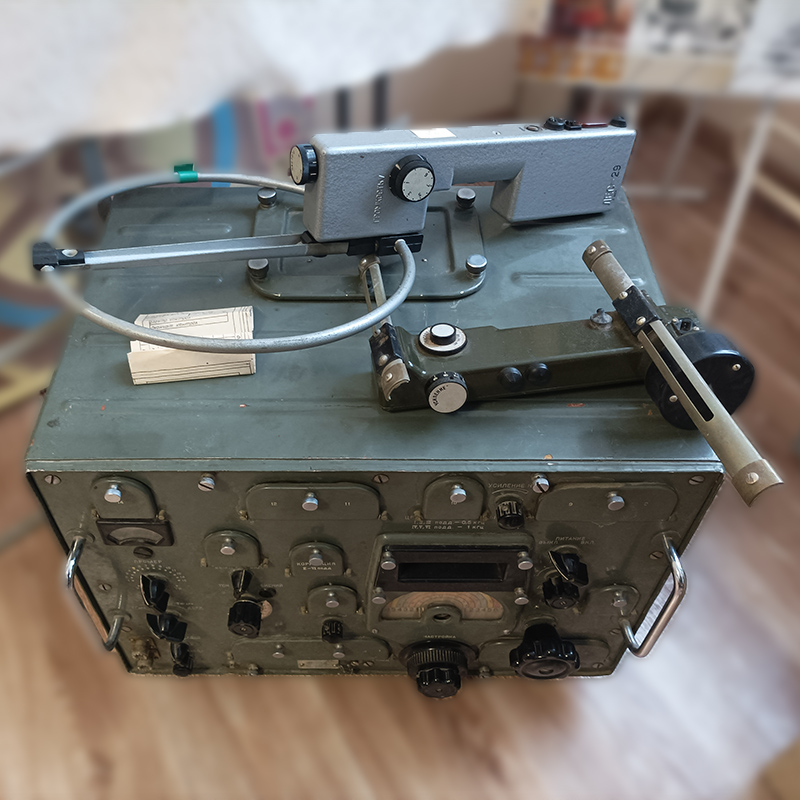

Receptor de Radiodifusión
Un receptor de radio diseñado para recibir programas de radiodifusión de sonido y reproducirlos acústicamente. Permite recibir señales de amplitud modulada transmitidas por estaciones de radiodifusión en los rangos de ondas largas (150-405 kHz), ondas medias (525-1605 kHz) y ondas cortas (3,95-12,1 MHz).
Receptor de Radio "Zoríta"
El receptor de radio "Zoríta" se creó a partir de un kit de construcción y el receptor "SVERCHÓK", y se produjo tanto como un dispositivo ensamblado como un kit de radioconstructor. El receptor ensamblado en fábrica "Zoríta" tiene un esquema de amplificación directa de la señal y opera en rangos desde ondas largas hasta ondas cortas.


Receptor de Radio "Yúnost"
Un receptor de radio reflexivo de amplificación directa 2-V-3 para el rango de onda corta (200-550 metros) con 4 transistores de germanio. Fue producido por la Primera Fábrica de Instrumentos de Moscú desde mediados de la década de 1960 hasta principios de la década de 1990. El kit de radioconstructor "Yúnost" consistía en el chasis del receptor de radio, una placa de circuito impreso, un conjunto de componentes electrónicos e instrucciones de montaje.
Conmutador Militar P-194M
Un conmutador telefónico de campo de servicio manual de capacidad media. Está diseñado para proporcionar comunicación telefónica interna entre abonados en la unidad de control, así como para la comunicación a través de líneas de enlace. El conmutador, con llamada inductiva y conmutación de cable, tiene una capacidad de hasta 40 números. El conmutador P-194M está diseñado para conectar 40 líneas de abonados.


Estación de Radio R-105
Una estación de radio portátil de onda ultracorta utilizada por las fuerzas soviéticas. Estuvo en servicio desde 1967. Permite el control remoto a través de un cable de hasta 500 metros y se utiliza como repetidor en redes de radio. Rango de frecuencias: 36,0-46,1 MHz.
Receptor de Radio Militar R-250M2
Un receptor de radio de onda corta soviético para comunicaciones a larga distancia, inteligencia de radio y radiogoniometría, de uso militar y civil, producido en varias versiones desde 1949 hasta 1980. Fue uno de los equipos más avanzados en su clase en su época y fue ampliamente utilizado por aficionados a la radio de onda corta. El rango de trabajo es de 1,5 a 25,5 MHz, dividido en 12 subrangos de 2 MHz cada uno.
